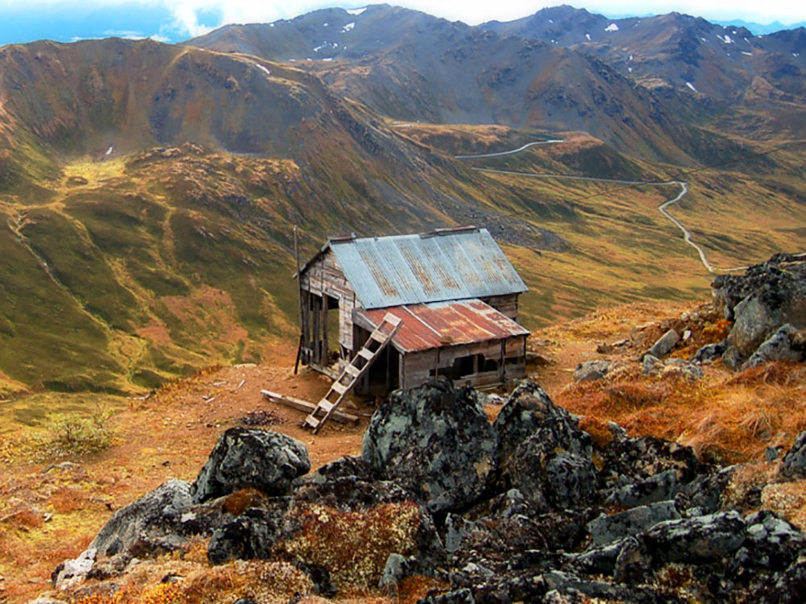
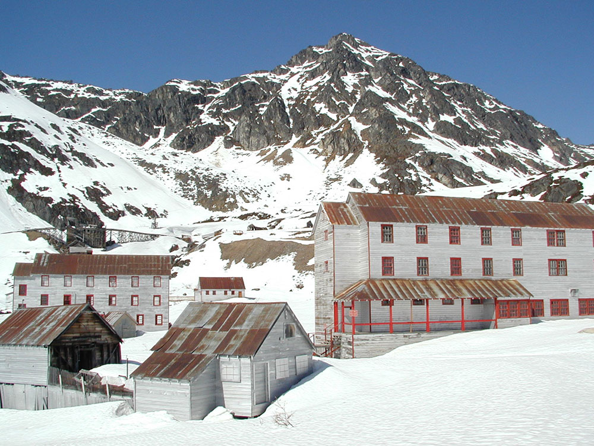
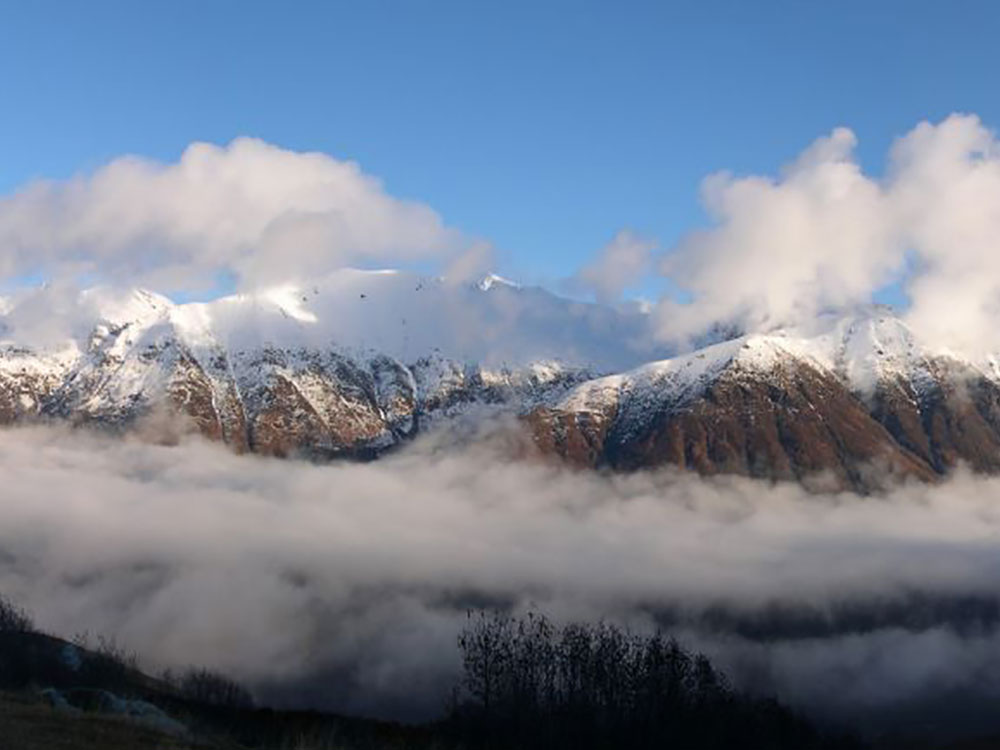

Scenic alpine mountain pass offering hiking trails, historic mining sites, sweeping valley views, and year-round outdoor recreation in a rugged wilderness setting.
General Information
Parking fees at developed areas such as Independence Mine are about $5 per day[2](https://andreakuuipoabroad.com/visit-independence-mine-summer-vs-winter/)
How to Get There
From Palmer (12 mi): Drive north on Palmer-Fishhook Rd from town, continue for about 13 miles following signs into the mountain pass and recreation area.
Overview
Hatcher Pass (3,886 feet) crosses the southwest Talkeetna Mountains north of Palmer, named for prospector Robert Hatcher, with old gold mine buildings (the Independence Mine State Historical Park) in an alpine bowl. The 49-mile Fishhook-Willow Road is open in summer (late June to September), and it is very popular for berry picking, hiking, fall color, and views. In winter, it is one of the state's best-known backcountry skiing areas, reached by a road that closes.
Highlights
- Independence Mine State Historical Park: the mill and camp, with tours in summer
- Hatcher Pass Lodge: food and lodging in Independence Valley
- Skiing: backcountry from late September to late April, and groomed Nordic trails at the lodge and Government Peak Recreation Area
Things to Do
Drive Through One of Alaska's Most Scenic Mountain Passes
Hatcher Pass is a spectacular alpine destination in the Talkeetna Mountains northeast of Palmer. Known for its dramatic mountain scenery, tundra landscapes, wildflower meadows, and historic mining sites, the area is one of Southcentral Alaska's premier recreational destinations and offers outstanding opportunities for sightseeing, hiking, photography, and wildlife viewing.
Visit Independence Mine State Historical Park
The centerpiece of Hatcher Pass is Independence Mine State Historical Park, a preserved gold mining complex that once served as one of Alaska's most productive hard-rock gold mines. Visitors can explore restored buildings, mining structures, interpretive exhibits, and learn about life in the remote mining community during the early twentieth century.
Discover Alaska's Gold Rush History
Throughout Hatcher Pass, remnants of historic mining operations remain visible along roadsides and trails. Interpretive signs and exhibits provide insight into the prospectors, miners, and communities that contributed to the development of Alaska's mining industry.
Enjoy Exceptional Wildlife Viewing
The alpine environment of Hatcher Pass supports a variety of wildlife including marmots, moose, mountain goats, ptarmigan, and occasional sightings of black and brown bears. Visitors frequently encounter wildlife while hiking or driving through the pass.
Experience Wildflower Season
During summer, Hatcher Pass becomes one of Alaska's premier wildflower destinations. Alpine meadows burst with colorful blooms including lupine, fireweed, paintbrush, and numerous other species that cover the mountainsides with vibrant color.
Explore Mountain Lakes and Waterfalls
Several trails lead to alpine lakes, streams, and waterfalls scattered throughout the recreation area. These scenic locations provide ideal opportunities for picnicking, photography, and enjoying the peaceful mountain environment.
Enjoy Winter Recreation
During winter, Hatcher Pass transforms into a popular destination for cross-country skiing, snowshoeing, snowboarding, backcountry skiing, and other snow-based activities. The area's deep snowpack and rugged terrain attract winter recreation enthusiasts from across Alaska.
Take in Scenic Roadside Views
The Hatcher Pass Road provides easy access to many of the area's best viewpoints. Even visitors who do not hike can enjoy stunning vistas of mountain ridges, valleys, mining structures, and alpine landscapes directly from roadside overlooks.
Top Trails
Gold Cord Lake Trail
Length: Approximately 1.5 miles round trip
Elevation Gain: Approximately 500 feet
Difficulty: Easy to Moderate
One of the most popular hikes in Hatcher Pass, this trail ascends from Independence Mine to a beautiful alpine lake surrounded by tundra and mountain scenery. It provides excellent opportunities for photography, wildlife viewing, and wildflower observation.
Reed Lakes Trail
Length: Approximately 8 miles round trip
Elevation Gain: Approximately 1,500 feet
Difficulty: Moderate
Widely considered one of the finest hikes in Southcentral Alaska, the trail passes through alpine valleys, stream crossings, and boulder fields before reaching two striking glacial lakes nestled beneath rugged mountain peaks.
Marmot Mountain Trail
Length: Approximately 4 miles round trip
Elevation Gain: Approximately 2,000 feet
Difficulty: Moderate to Strenuous
This steep trail rewards hikers with panoramic views of Hatcher Pass, surrounding peaks, and alpine valleys. During summer, hikers often encounter abundant wildflowers and occasionally spot marmots along the route.
Gold Mint Trail
Length: Approximately 4 to 8 miles round trip depending on destination
Elevation Gain: Moderate
Difficulty: Moderate
Following a historic mining corridor, the Gold Mint Trail travels through scenic valleys and alongside mountain streams. The route offers opportunities to explore remnants of the region's mining history while enjoying spectacular mountain scenery.
April Bowl Trail
Length: Approximately 2 miles round trip
Elevation Gain: Approximately 1,000 feet
Difficulty: Moderate
Popular with hikers and winter recreationists, this route climbs into an alpine basin above Independence Mine and provides impressive views of the surrounding mountains and historic mining district.
This article uses material from the Wikipedia article and official pages for dnr.alaska.gov, thematsualaska.com, Hatcher Pass, released under the Creative Commons Attribution-Share-Alike License 3.0.





.jpg){kind=link}